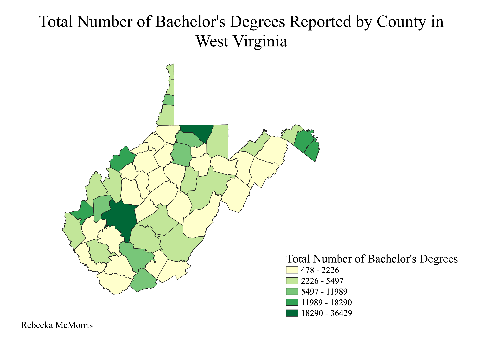

Homework 7: Census data choropleth
Rebecka McMorris
This map shows a breakdown by county in West Virginia of the total number of bachelor's degrees reported. I was born in West Virginia and I know of the stereotype that people from there are uneducated, so I thought it would be interesting to see a breakdown of the number of degrees in different parts of the state. There are more colleges in the northern part of the state, so I wanted to see if there was a correlation between that and the number of bachelor's degrees.

Data used for this project
CSV dataset
Link to shapefile
Link to geoJSON